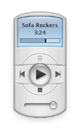

Companion apps for
Apple Music on macOS
Tiny apps. Huge personalities. Classic design.


Music Widget
A replica of the original iTunes widget introduced with Dashboard in Mac OS X Tiger,
this small remote can be used to control playback, volume, and playlists.
Learn more about Music Widget
"You can once again enjoy your music in retro OS X style."
The Verge

Music MiniPlayer
A replica of the original iTunes 10 MiniPlayer, this small remote can be used to control playback,
volume, and playlists; all with an interface that is sure to take you back in time.
Learn more about Music MiniPlayer
"The Music app does offer its own MiniPlayer option, but I find Guzman’s utility to be both more useful and more capable for almost everything."
9to5Mac
Mac, Macintosh, macOS, Mac OS X, Dashboard, iTunes, and Apple Music are registered trademarks of Apple Inc.
© 2019-2022 Mario A Guzman
Personal
Projects